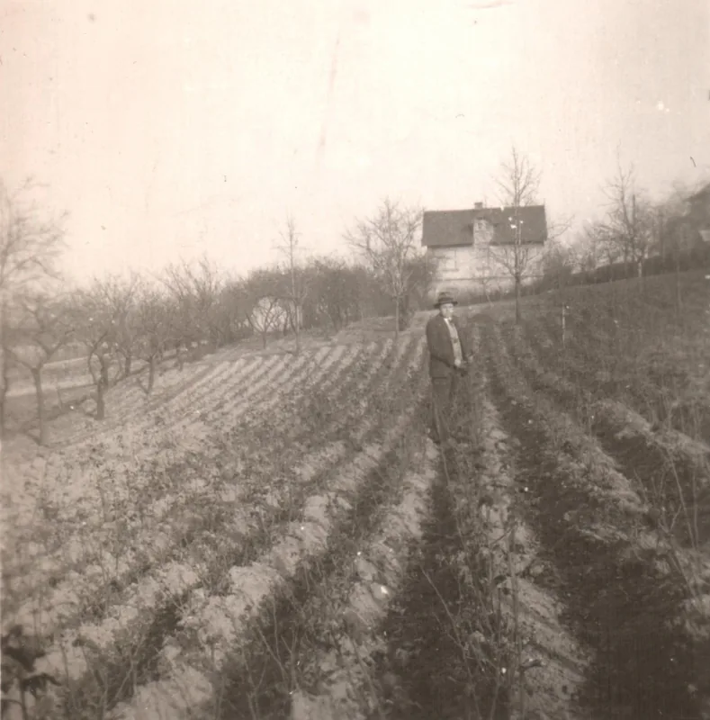
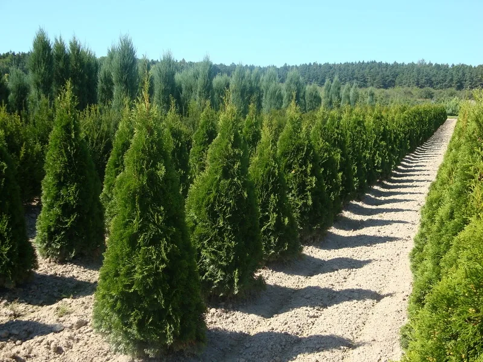

Otevřeno denně
E-shop
Zahradničíme tu čtvrtou generaci.
Rodinné zahradnictví ve Střešovicích. Pod sklem 3 700 m² rostlin, venku dřeviny z naší vlastní školky a u vchodu restaurace. Otevřeno sedm dní v týdnu.

Střešovická 458/47, dnes

Co je u nás teď v sezóně
Sortiment se mění s rokem. Vyberte měsíc a uvidíte, pro co se k nám vyplatí zajet.


Stromy si pěstujeme sami.
V roce 2000 založil Jiří Chládek okrasnou školku u Českých Budějovic. Tůje, cypřiše, keře i vánoční stromky odtud jedou rovnou do Střešovic. Rostliny jsou zvyklé na české podnebí, nestresuje je dlouhý převoz, a proto se na zahradě lépe ujmou.
- Rozloha
- 25 hektarů
- Založena
- 2000
- Pěstujeme
- jehličnany, keře, trávy, solitéry
- Venkovní prodej v Praze
- březen až listopad

 1910
1910 1992
1992 1998
1998 2003
2003 2008
2008 Dnes
Dnes